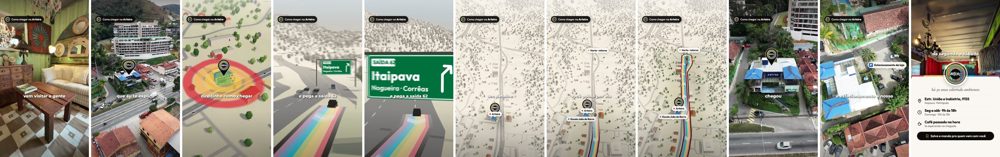

A Cape montou um repositório no GitHub (virtualfera/capestudios) com tudo o que um editor precisa para produzir sem travar:
as fichas de cada cliente (cores, fontes, fatos reais com fonte, endereço, rosto, CTA), os formatos de vídeo que já funcionam
(com a referência decupada), uma pauta do que fazer agora e um motor que gera motion (cards, pins, cartão final, stories só com texto).
Você abre o Claude Code dentro dessa pasta no seu notebook. Ele lê as instruções sozinho (CLAUDE.md) e passa a
conhecer os clientes e as regras da Cape: nada genérico, nunca inventar dado, sempre partir de referência.
Você continua editando no seu programa (Premiere, DaVinci, CapCut). O Claude roteiriza, decupa, organiza os takes, gera motion e confere.
Abra o menu Iniciar, digite PowerShell e abra. Cole um bloco por vez e espere terminar.
winget install --id Git.Git -e
winget install --id OpenJS.NodeJS.LTS -e
winget install --id Python.Python.3.12 -e
winget install --id Gyan.FFmpeg -eirm https://claude.ai/install.ps1 | iexDocumentos\capestudios)
cd $HOME\Documents
git clone https://github.com/virtualfera/capestudios.git
cd capestudios
git checkout claude/producao-videos-clientes-6xsw3fmain.capestudios)
npm install
npx playwright install chromium
py -m pip install pillow opencv-python-headlessclaudeDocumentos\capestudios. Os passos 1, 3 e 4 continuam necessários para o motor de vídeo.cd $HOME\Documents\capestudios
git pull
claudegit pull traz o que o time atualizou (fichas, formatos, pauta). Takes brutos ficam em brutos\ e vídeos prontos
em entregas\. Essas duas pastas não sobem para o GitHub, porque são pesadas. Quando o Claude melhorar uma ficha ou um formato, peça
para ele "commitar e dar push" para o resto do time receber.
Peça em português normal. Bons primeiros pedidos:
Comandos do motor no Windows (o Claude roda por você, mas é bom saber):
py -I motor\montar.py projetos\arteiro\localizacao.json --checar # 6 quadros para revisar (segundos)
py -I motor\montar.py projetos\arteiro\localizacao.json # MP4 1080x1920, 30 fps, -14 LUFS + capaArquivo: clientes/arteiro/referencias/localizacao-como-chegar-arco-iris.mp4 (57 s). Assista inteiro antes de começar.
A decupagem completa, cena a cena, está em formatos/localizacao.md.

A ideia: um GPS afetivo. Um mapa 3D claro, em low-poly, com uma rota nas cores da marca (no Arteiro, o arco-íris do logo) que leva quem vem do Rio até a porta. O mapa entrega a informação, o drone real prova que o lugar existe e o cartão final é o que a pessoa salva.
| Tempo | Bloco | O que acontece |
|---|---|---|
| 0–4 s | Convite | Interior bonito, drone da fachada, pin cai na loja. "vem visitar a gente / salva esse vídeo / direitinho como chegar" |
| 4–5 s | Mergulho | Match-cut: o drone vira o mapa 3D no mesmo enquadramento. Anel colorido pulsa no pin. |
| 6–13 s | Rodovia | Carro low-poly na rota colorida. "vindo do Rio, sobe a serra pela BR-040". Placa verde da saída em tela cheia. |
| 14–19 s | Estrada local | Vista aérea da rota pela via. "daí é só seguir… uns 3 quilômetros" |
| 20–32 s | O detalhe | Zoom com rótulos (loja, referência, retorno). "do outro lado da pista, do lado da escola… faz o retorno… volta uns 400 metros" |
| 33–38 s | Chegou | Anel gigante "pronto" e match-cut mapa → drone. "é o prédio do telhado azul" |
| 39–43 s | Estacionamento | Drone de cima com rótulo "Estacionamento da loja". "o estacionamento é nosso… vaga pra cadeirante" |
| 45–58 s | Cartão final | Interiores se alternando atrás do cartão: endereço, horário, mimo (café) e botão "Salva e manda pra quem vem com você". |
Fixos: selo "Como chegar no [cliente]" no topo esquerdo o vídeo todo; legenda palavra a palavra, branca e no centro; narração de quem explica a um amigo ("um detalhe", "pronto", "chegou").
formatos/localizacao.md. Sem isso, cada mapa novo começa do zero.motor/templates/localizacao.html) com os dados da ficha.Cliente_ComoChegar_v1.mp4. Nunca sobrescrever: a próxima versão é v2.Oi! Vamos fazer o vídeo "Como chegar" de vocês (aquele com o mapa e o drone).
Pode me confirmar:
1. Endereço completo (rua, número, complemento/sala)
2. Horário de funcionamento (dias e horas)
3. De onde vem a maioria dos clientes (Rio? centro? outra cidade?)
4. Algum detalhe que confunde quem chega pela primeira vez (lado da pista, retorno, entrada escondida)?
5. Tem estacionamento? Próprio ou conveniado? Vaga para cadeirante?
6. Um mimo ou diferencial de quem chega (café, água, recepção)?
7. Podemos passar o drone na sexta de manhã?Partes entre colchetes vêm da ficha ou do cliente. O ritmo é o da referência: frases curtas, uma informação por vez.
Vem visitar a gente.
Salva esse vídeo, que eu vou te mostrar direitinho como chegar.
Vindo do [ORIGEM], [TRECHO DA RODOVIA]
e pega a saída [NÚMERO/NOME DA SAÍDA].
Daí é só seguir pela [VIA], sentido [BAIRRO], uns [DISTÂNCIA].
Um detalhe: [O QUE CONFUNDE: lado da pista / referência / entrada].
[MANOBRA: faz o retorno em X e volta Y metros].
Pronto. Chegou: é [MARCA VISUAL DO PRÉDIO].
Veio de carro? [ESTACIONAMENTO + ACESSIBILIDADE].
A gente abre [DIAS E HORÁRIOS].
E tem [MIMO] te esperando… pra quem vem com você.Saúde (Hospital, Intensa): o "Como chegar" é logístico, então pode. Só não prometa nada de tratamento. Ex.: "no dia da cirurgia, venha com acompanhante", desde que o próprio hospital confirme a orientação.
| Cliente | Já temos | Falta | Cor da rota |
|---|---|---|---|
| Arteiro | Referência pronta (prévia). Endereço, horários, trajeto, estacionamento, vaga PcD e café. | Aprovar e publicar. Fixar nos destaques. | Arco-íris do logo |
| Hospital de Olhos Dr. Tannure | "Desde 1978". Endereço em diretórios públicos: Av. Ipiranga, 298, Centro. | Confirmar endereço e horários, trajeto (vindo de onde?), estacionamento, o que pode ser filmado, drone. | Azul → verde-limão |
| Intensa | Fica no Pátio Petrópolis. 17 anos de implantes. | Sala/andar, caminho de dentro do Pátio até a clínica, estacionamento do Pátio, horários, drone. | Vinho → blush |
| W&S Coworking | Centro de Petrópolis, Unidade Bauhaus, salas P/M/G, sala de eventos. | Endereço, horário de acesso, estacionamento, @ oficial, drone. | Laranja → marinho |
Tudo isso também está em clientes/<cliente>/marca.json. Quando o cliente confirmar, peça ao Claude para atualizar a ficha com a fonte.
O formato é um produto que a Cape pode vender para qualquer negócio que depende de visita: lojas, restaurantes, pousadas, clínicas, salões, escolas, eventos. Em Itaipava e Petrópolis ele resolve uma dor real: o turista que vem do Rio e se perde na União e Indústria.
"Claude, cria a ficha do cliente novo [NOME] em clientes/[slug]/marca.json,
com base no Instagram @[perfil] e nestas informações: [...]. Marca como
CONFIRMAR tudo o que não tiver fonte."| Cliente | Ideias |
|---|---|
| Arteiro | Tour dos 3 andares fora da Black; "Garimpo do 3º andar" (pia inglesa, molduras de demolição); Robson recebendo na porta; presentes de Natal por faixa de preço (com preços do cliente); antes e depois de restauro do galpão. |
| Hospital / Dr. William | "No dia da sua cirurgia: chegada, recepção, acompanhante" (logístico, validado pelo hospital); série DM-pergunta → resposta do Dr. William (já é o formato dele); caixinha de dúvidas de catarata (story pronto no repositório). |
| Intensa | "Sua primeira consulta: do estacionamento do Pátio até a cadeira"; série "o que a dentadura tira de você" em stories (texto de roteiros já aprovados); a história "O que o fogo não levou" (conversar com a clínica antes). |
| W&S | "Primeiro dia no W&S": chegada, recepção, Wi-Fi e sala; abrir as portas das salas P, M e G; sala de eventos montada vs. vazia; checklist do bom coworking (story pronto). |
Vídeos sem áudio para testar formatos antes de gravar reel. O motor tem 4 modelos: lista, pergunta-resposta, caixinha e checklist.
Já existe uma pauta pronta para cada cliente em projetos/. O que segurar a audiência por 24 h vira reel gravado com o rosto do cliente.
_v1, _v2…), nunca sobrescrever.| Erro | O que fazer |
|---|---|
winget não é reconhecido | Atualize o "Instalador de Aplicativo" pela Microsoft Store e abra o PowerShell de novo. |
npm: "execução de scripts foi desabilitada" | Rode Set-ExecutionPolicy -Scope CurrentUser RemoteSigned, confirme com S e tente de novo. |
git, node, ffmpeg ou claude não encontrado logo após instalar | Feche e abra o PowerShell. Se continuar, reinicie o notebook. |
python3 não existe | No Windows use py (ex.: py -I motor\montar.py …). |
| Qualquer outra coisa | Cole a mensagem de erro inteira para o Claude e peça para ele resolver. |
Repositório: github.com/virtualfera/capestudios · Arquivos-chave: CLAUDE.md, PAUTA-FRED.md, formatos/localizacao.md, clientes/*/marca.json